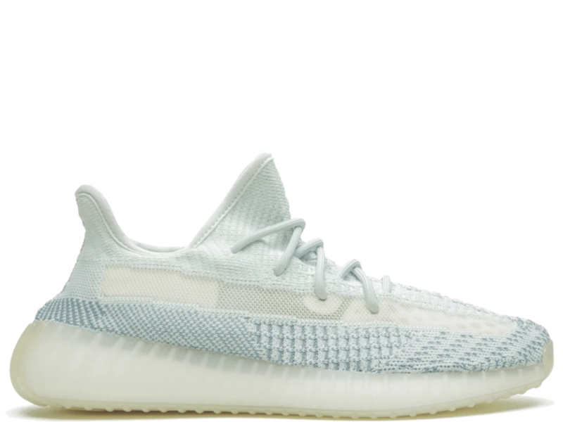

Yeezy Boost 350 V2

Nike Air Force 1 07
Vans Old Skool Pro
Jordan 1 Retro High
Yeezy Boost 350 V2, one of the well-known shoes in this world. The reason is that most of the famous enthusiasts know about this shoe. Let us know the history behind it, this is an Adidas signature shoe by a celebrity called Kanye West with the lowest price of RM2200. The reason this shoe is expensive can be cause by lots of reason. Firstly, the shoe is extremely comfortable because of the boost technology use by Adidas on this shoe. Next, the shoe is not hard to clean because of the good materials use by this shoe. Moreover, the good materials of the shoe allow the shoe to be more breathable allow it to feel nice after a long walk. Finally, the unique shape design of the shoe allows you to put on the shoe easily.
For the cons of the shoe, the shoe is expensive is the number one on the list. Secondly, the shoe is too rare for some of the shoe colorway making it hard for customers who want to buy the shoe to get their hand on pair of the shoe. Thirdly, the mash design of the shoe causes the shoe to get stain easily luckily the shoe is easy to be clean. Finally, the midsole design of the shoe is a yellowish design which cause the midsole looks old.
The shoe is available here
| Pros | Cons |
|---|---|
| Extremely comfortable | Expensive |
| Not hard to clean | Rare |
| Good materials | Easy to get stain |
| Breathable | Midsole design |
| Easy to put on | |
| Shape design |
The next shoe is Nike Air Force 1 07 which is one of the highest Nike sneakers review out of all the Nike sneakers. This is a cheap sneaker which is at the price of RM500. Everything happen for a reason, the reason that this Nike sneaker have the highest reviews is that the shoe is very stylish because this shoe can be pair with almost every type trousers with a lot of colorways to choose from and a lot of celebrity’s signature design to choose from. Other than that, the shoe has excellent traction for a sneaker. Speaking of traction, the shoe has wide base which is suited for people with wider feet. Moreover, the cushion of the shoe is very comfortable, and the shoe is very durable due to its hard shoe design.
This shoe only has two cons, the first one is heavy because of the material use to make the shoe such as base. The base of the shoe is mostly making out of rubber. Other than that, the flat base of the shoe will cause our feet to feel more tired after the long walk.
The shoe is available here
| Pros | Cons |
|---|---|
| Durable | Heavy |
| Stylish | Flat base |
| Comfortable | |
| Wide base | |
| Excellent traction | |
| Many colorways |
Vans Old Skool Pro is a sneaker from the brand Vans which is a skating brand and the cheapest famous sneakers there are in this sneaker world. What make this shoe stand out from other is its comfortability. This shoe is made of fabric with make it comfortable because of the ventilation and the softness of the base. Other than that, the shoe also gives wearer very good fit because the shoe will increase its size depend on your feet over time. The shoe fabric is stretchable. Moreover, the shoe is very durable because the shoe is meant to be a skating shoe, so it is built to be durable. Finally, the shoe is versatile which mean that the shoe can be wear to almost any occasion such as gym, skating or street wear.
The bad thing about the shoe is that it need time to increase its comfortability which is a bad thing because you need to wear the shoe for a long time to increase its comfortability. Other than that, the shoe has flat base which can cause painfulness after a long time of wearing it.
The shoe is available here
| Pros | Cons |
|---|---|
| Comfortable | Need time to increase comfortability |
| Give wearers good fit | Flat base |
| Durable | |
| Versatile |

One of the most classic and well-known sneakers in the history is Jordan 1 Retro High which is a Nike brand sneaker. Other than it is well-known because of its design, it is a signature design shoe by the ex-NBA star, Michael Jordan which explain the reason why the shoe is called Jordan. A pair of this shoe can be price from RM800 – RM71000 depending on the type of series you buy.
One of the reasons that this shoe is well-known is because it has many colorways to be exact, it has 168 colorways which make it have many choices to choose from. Other than that, it has good ankle support and protection which protect your ankle and feet while you are walking because of its high cut and sculpted heel. Next, it has great traction patterns prevent you from slipping while walking. Moreover, the shoe is flexible, and light allow you to walk for a long time.
The company is not consistent with the quality of the products which cause some people who buy the shoe will receive the shoe with some flaws. Other than that, the shoe has not enough ventilation cause it to feel hot after a while. Finally, there is not much impact protection on the base of the shoe. Impact protection is used to absorb shock when you land on the ground after jumping.
The shoe is available here
| Pros | Cons |
|---|---|
| Many colorways | Not consistent quality |
| Good ankle support and protection | Not much ventilation |
| Great traction patterns | Not much impact protection |
| Flexible | |
| Light |